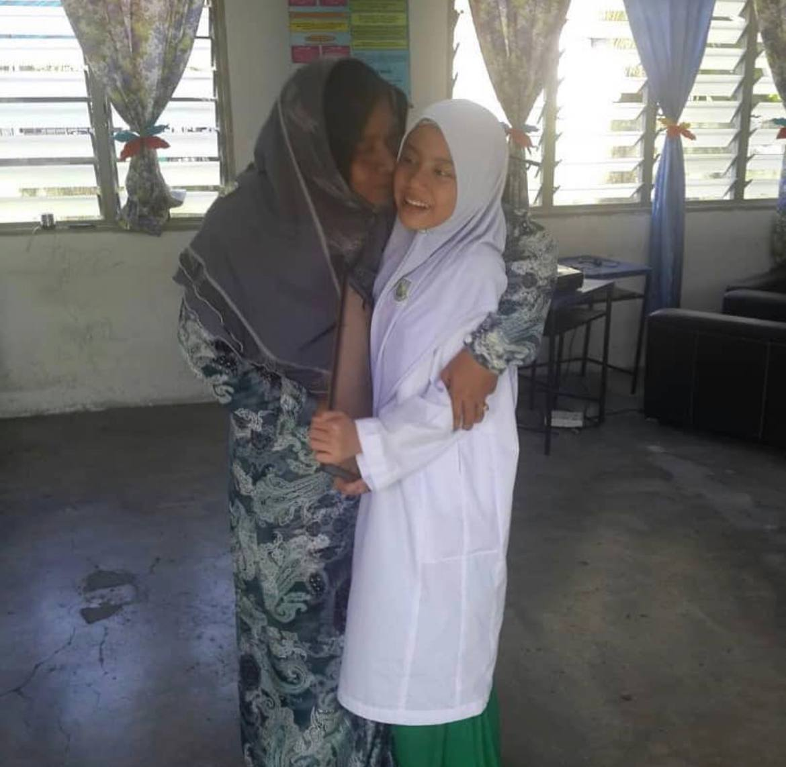

Learning is one of the most enjoyable aspects of my life. Every chapter of my journey is filled with memories, marked by both ups and downs that have shaped me along the way.
| YEAR | PHOTO | STORY |
|---|---|---|
| 2015 |  | During my school days, I was very active and participated in various activities, including nasyid, taranum and arabic syarahan. This photo was taken when I was in 5th grade at school, where I won an Arabic syarahan competition. I truly enjoyed participating in competitions because they helped me gain valuable experiences. |
| This is my UPKK result from 5th grade. I am truly grateful to have achieved straight A's. During the trial, I failed in many subjects, but I worked hard and proved to my mom and dad that I could succeed. | ||
| 2019 | In 2019, I sat for PT3 and received results of 4A's, 4B's, and 2C's. I am grateful for my efforts, as I have never considered myself a naturally smart person. However, I believe that everyone should strive to achieve the best results they can through hard work. | |
| We are participating in Ihtifal program, which has given me the opportunity to gain new experiences. As part of the program, we visit other schools to compete in hafazan and arabic syarahan at the state level. Besides, we also sat for the Arabic language test. I am thrilled that we won a trophy, and it was such a proud and joyful moment for me. | ||
| This is me and my friends on the day we got out PT3 results. I had mixed feelings that day both happy and sad. I was happy because I achieved good results, although I could not join my friends on stage, I am still grateful for my achievements and the memories I made, but I am also sad because it was my last day at that school, I was transferring to a new school in 2020. | ||
| 2022 | This is the day I received my SPM results, I got 5a's, 3B's, 1D, and 1E. I am very grateful for passing all the subjects, even though I received an E in Mathematics, a subject I neither enjoy nor good in. Despite this, I am thankful I passed, and it has not dampened my passion for learning. With 5A's, I can still pursue my studies at the university. So, let's not lose hope. | |
| This is me attending an extra arabic class at school organized by my teacher for the preparation of SPM. I am very happy because this opportunity allows me to deepen my knowledge and do a quick revision before facing the "battlefield" of the SPM exams. | 2023 | This is my results for my first semester in Diploma of Information Management. At first, I was shocked because I did not expect much, but when I checked my results, I found out that I made it to the Dean's List. I was so happy and became determined to maintain this achievement every semester. Besides, I successfully maintained the Dean's List for semester 1,2,3, and 4. Now, I pray and hope to achieve it again in my final semester which is semester 5. My dream is to wear the 'selempang pink' during graduation, and I am working hard to make it a reality. |
{kind=link}
{kind=link}
{kind=link}
{kind=link}
{kind=link}
{kind=link}
{kind=link}
{kind=link}